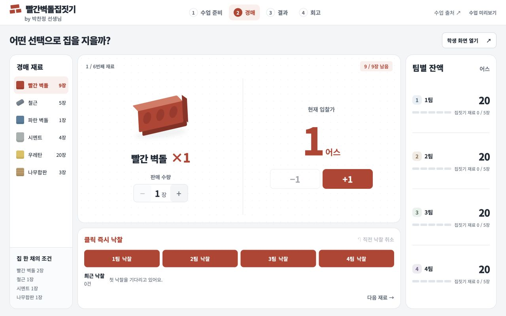
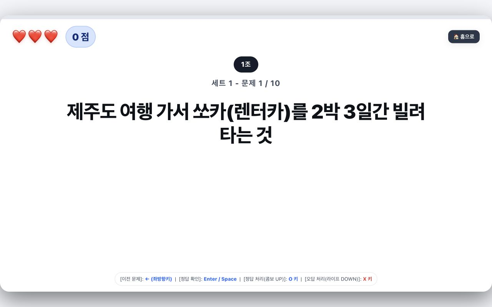
생산분배소비 사구동성
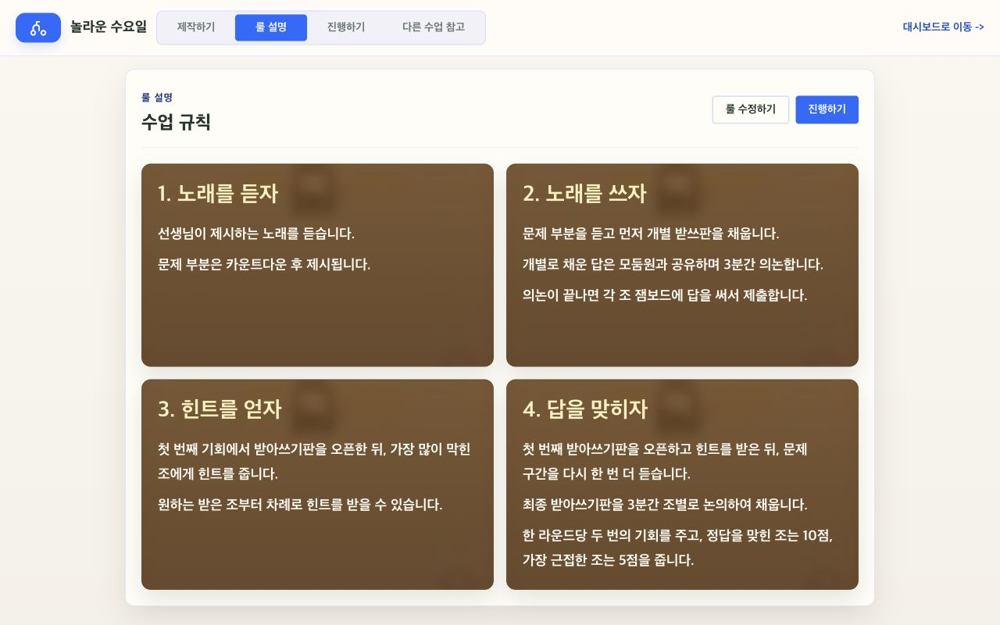
놀라운 수요일 진행용 도구
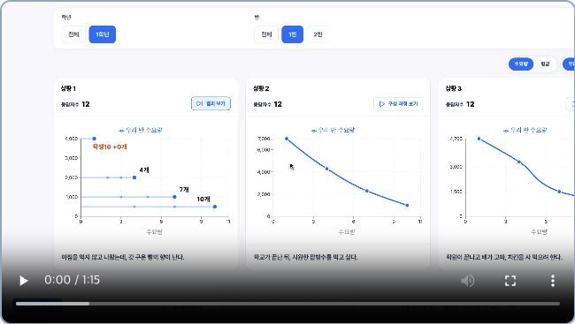
우리가 만드는 수요곡선
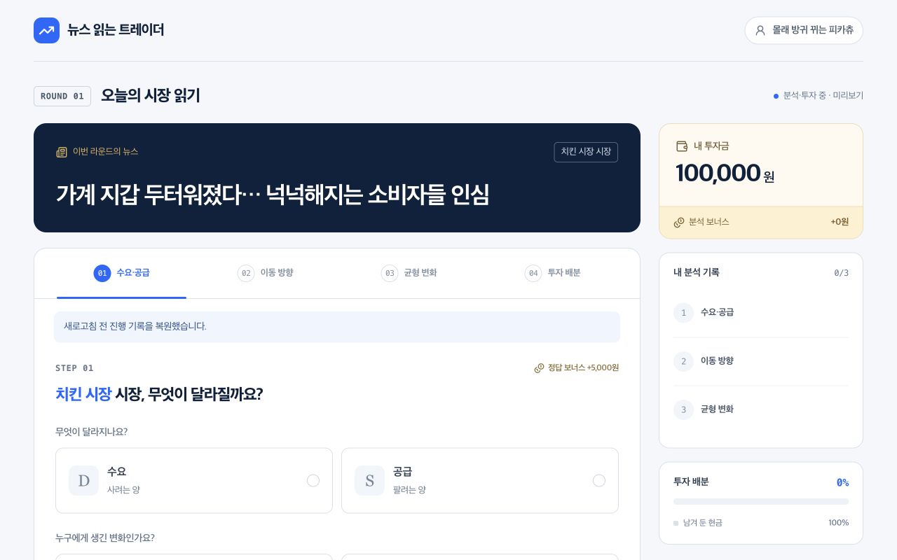
뉴스 읽는 트레이더
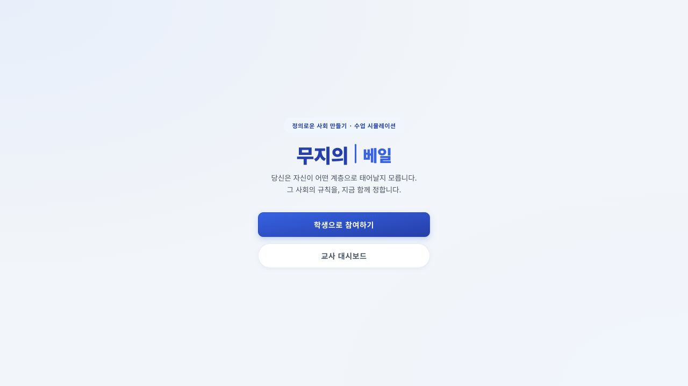
무지의 베일
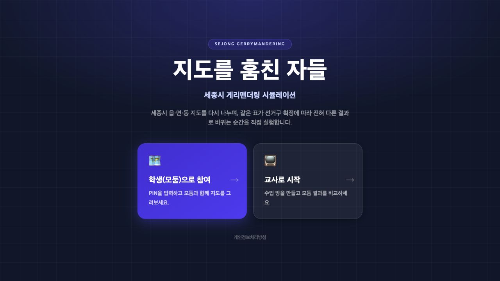
지도를 훔친 자들: 게리멘더링의 마법
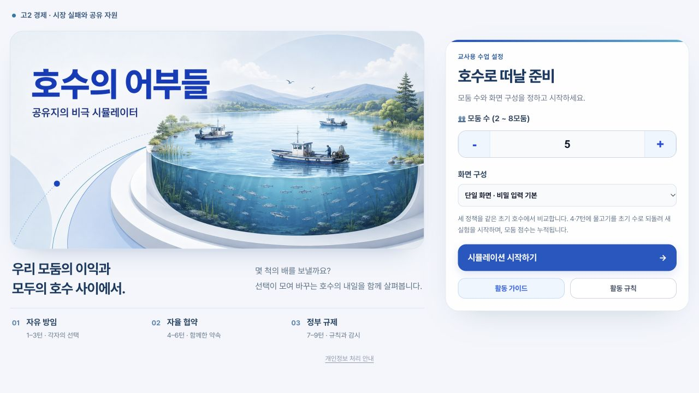
호수의 어부들: 공유지의 비극 시뮬레이터
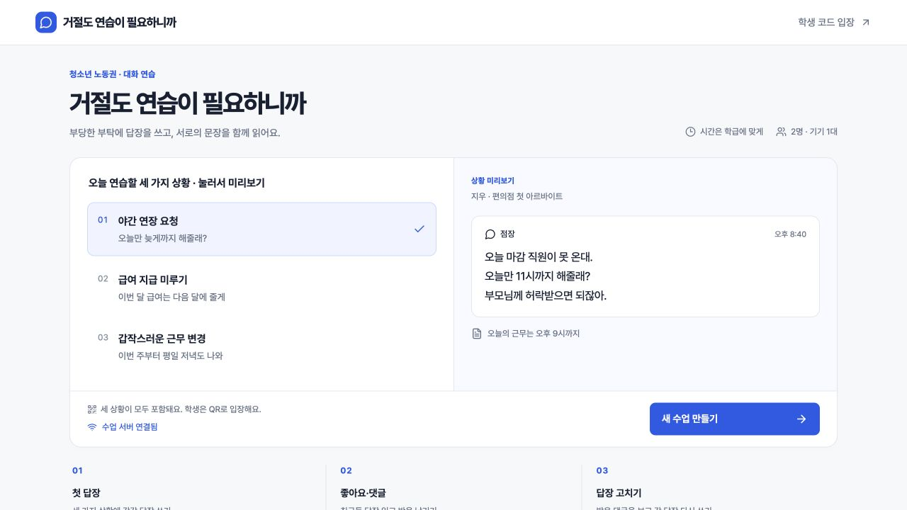
거절도 연습이 필요하니까
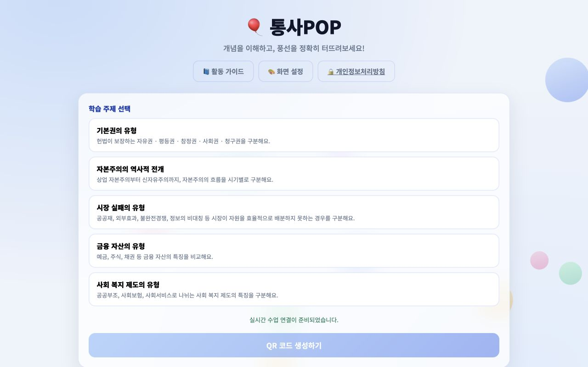
통사POP
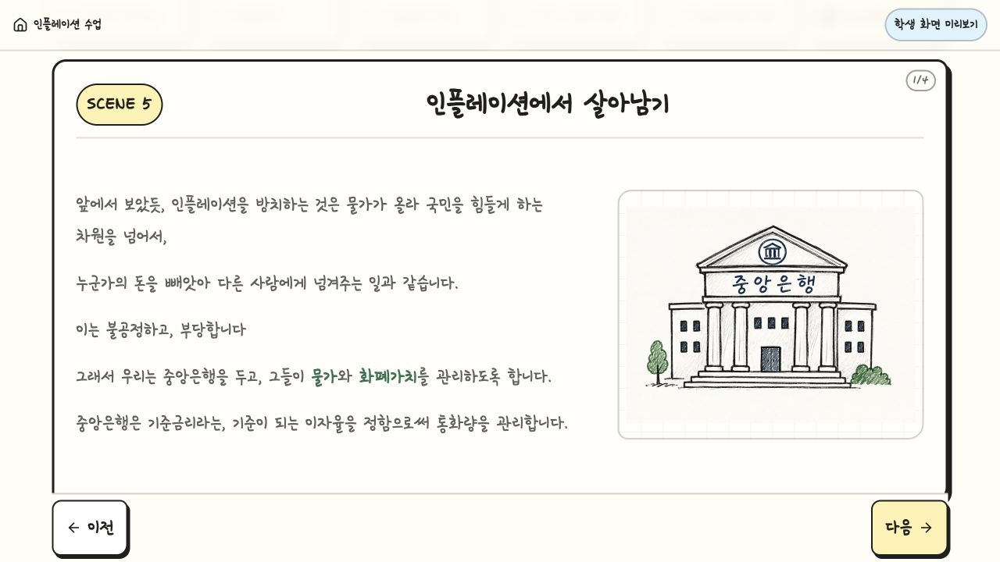
금리, 화폐가치, 인플레이션
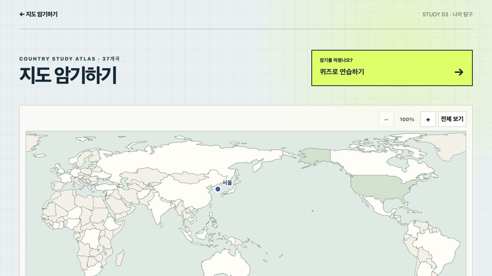
앉아서 세계 속으로
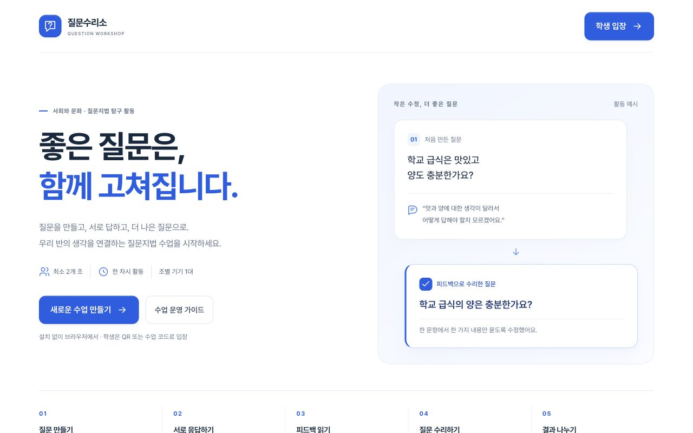
질문수리소
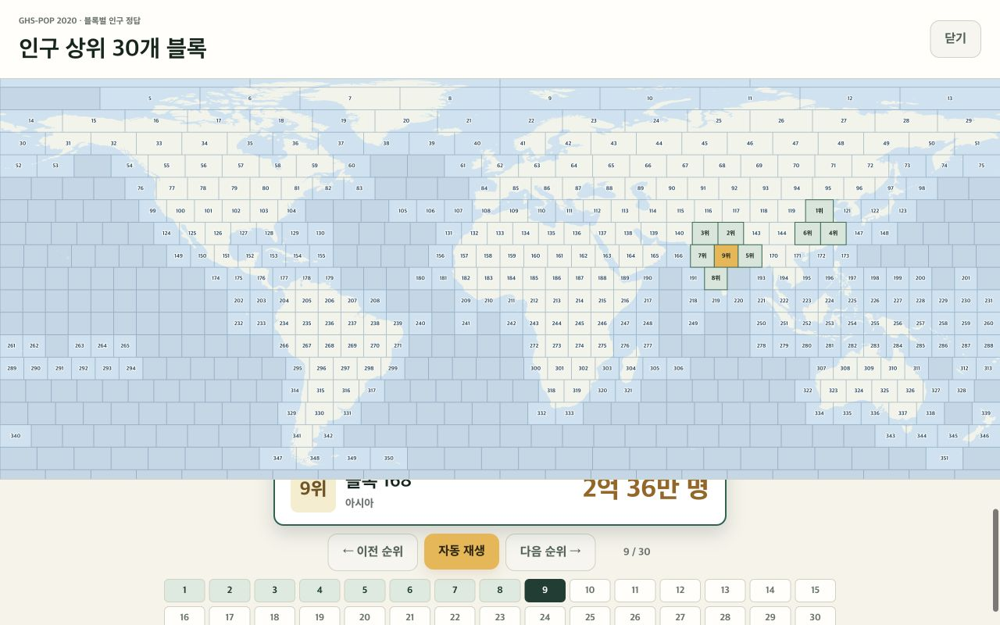
인구 땅따먹기
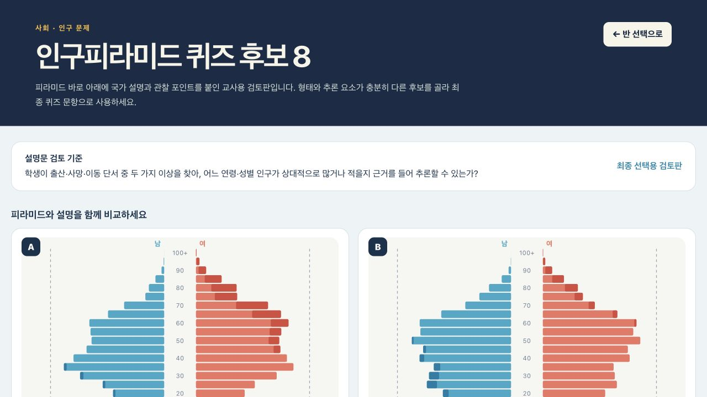
인구피라미드 추론
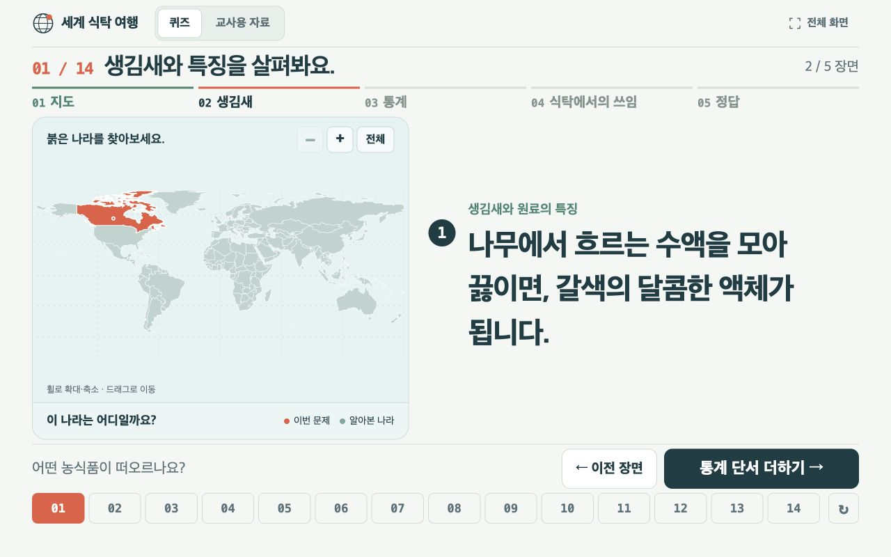
식재료, 너희 어디서 왔니
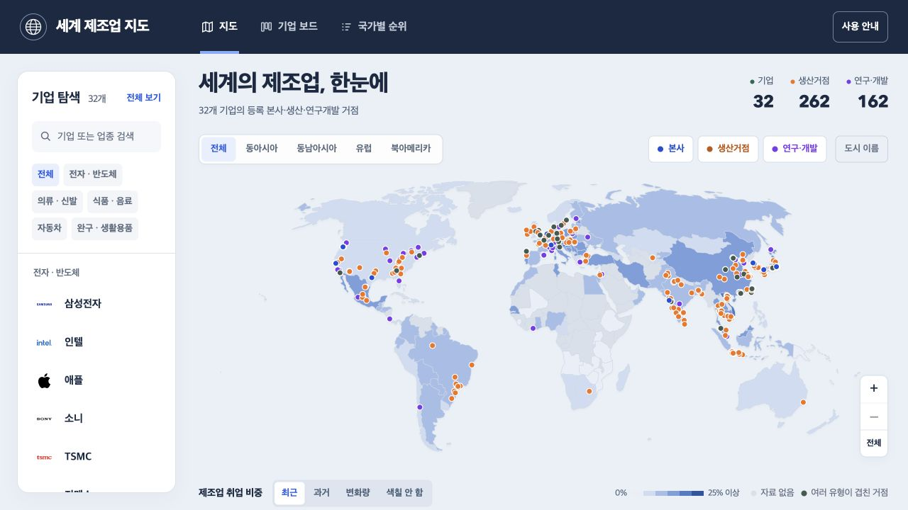